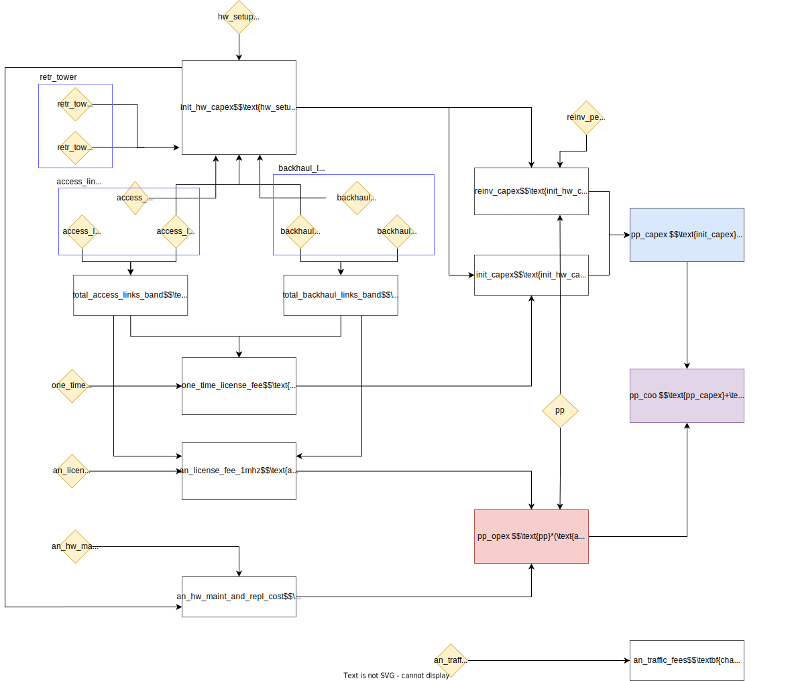

Costs
Overview
The CostModel class calculates deployment and operational costs for telecommunications infrastructure. It provides cost analysis for multiple technology options (fiber, cellular, point-to-point, satellite, and electricity) to support infrastructure planning decisions, computing capital expenditures (CAPEX), operational expenditures (OPEX), and operator revenue projections for each technology option.
Key features:
- Multi-technology cost analysis (fiber, cellular, point-to-point, satellite, electricity)
- Capital expenditure (CAPEX) calculations including equipment and installation costs
- Operational expenditure (OPEX) calculations including maintenance and traffic fees
- Operator revenue projections based on throughput requirements
- Cost of ownership analysis over multiple time periods
- Per-POI cost breakdowns for detailed planning
Class Parameters
| Parameter | Type | Default | Description |
|---|---|---|---|
| primary_tech_params | pd.DataFrame |
Required | DataFrame containing technology parameters with columns 'Variable name' and 'Value'. Must include all parameters defined in get_required_keys() |
| logger | logging.Logger |
None |
Logger instance for logging messages |
| expansion_factor | float |
1.1 |
Factor to increase the amount of fiber line required by 10% (or other amount) |
Example of primary_tech_params input
| Technology | Parameter | Variable name | Value | Measurement unit |
|---|---|---|---|---|
| fiber | On-premises hardware setup cost (materials, equipment, labor) | hw_setup_cost_fiber | 500 | USD per POI |
| fiber | Fiber optical cable line construction cost (materials, equipment, labor) | focl_constr_cost_fiber | 8000 | USD per km |
| fiber | Hardware refresh after | reinv_period_fiber | 5 | Years |
| fiber | Annual hardware maintenance and replacement costs | an_hw_maint_and_repl_fiber | 0.1 | USD per year (as a fraction of hardware CapEx) |
| fiber | Annual transit bandwidth cost for 1 Mbps of dedicated internet access channel over a fiber optic cable line | an_traffic_fees_one_mbps_fiber | 12 | USD per Mbps per year |
| fiber | Annual access bandwidth cost for 1 Mbps of dedicated internet access channel over a fiber optic cable line | an_isp_fees_one_mbps_fiber | 31.8 | USD per Mbps per year |
| fiber | Time required to install fiber infrastructure | invest_time_fiber | 0 | Years |
| p2area | On-premises hardware setup cost (materials, equipment, labor) | hw_setup_cost_p2area | 80 | USD per POI |
| p2area | Reinvest into hardware after | reinv_period_p2area | 3 | Years |
| p2area | Annual hardware maintenance and replacement costs | an_hw_maint_and_repl_p2area | 0.1 | USD per year (as a fraction of hardware CapEx) |
| p2area | Annual Traffic fee for 1 Mbps of dedicated internet access channel over cellular network | an_traffic_fees_one_mbps_p2area | 12 | USD per Mbps per year |
| p2area | Annual ISP fee for 1 Mbps of dedicated internet access channel over cellular network | an_isp_fees_one_mbps_p2area | 24 | USD per Mbps per year |
| p2area | Time required to install cellular infrastructure | invest_time_p2area | 0 | Years |
| p2p | On-premises hardware setup cost (materials, equipment, labor) | hw_setup_cost_p2p | 500 | USD per POI |
| p2p | Microwave point-to-point access link installation and comissioning cost (materials, equipment, labor) | access_link_setup_p2p | 831.59 | USD per hop |
| p2p | Number of microwave point-to-point backhaul links | backhaul_link_num_p2p | 0 | Links |
| p2p | Microwave point-to-point backhaul link installation and comissioning cost (materials, equipment, labor) | backhaul_link_setup_p2p | 2825.07 | USD per hop |
| p2p | Number of retransmission telecommunication towers | retr_tower_num_p2p | 0 | Towers |
| p2p | Retransmission telecommunication tower installation cost | retr_tower_inst_p2p | 13000 | USD per tower |
| p2p | Bandwidth per access link | access_link_bandwidth_p2p | 10 | MHz |
| p2p | Bandwidth per backhaul link | backhaul_link_bandwidth_p2p | 20 | MHz |
| p2p | One time license fee for 1MHz | one_time_license_fee_1mhz_p2p | 500 | USD per MHz |
| p2p | Reinvest into hardware after | reinv_period_p2p | 5 | Years |
| p2p | Annual hardware maintenance and replacement costs | an_hw_maint_and_repl_p2p | 0.004 | USD per year (as a fraction of hardware CapEx) |
| p2p | Annual recurring license fee for 1MHz | an_license_fee_1mhz_p2p | 100 | USD per MHz per year |
| p2p | Annual Traffic fee for 1 Mbps of dedicated internet access channel over a P2P microwave link | an_traffic_fees_one_mbps_p2p | 12 | USD per Mbps per year |
| p2p | Annual ISP fee for 1 Mbps of dedicated internet access channel over a P2P microwave link | an_isp_fees_one_mbps_p2p | 24 | USD per Mbps per year |
| p2p | Time required to install P2P infrastructure | invest_time_p2p | 0 | Years |
| satellite | On-premises hardware setup cost (materials, equipment, labor) | hw_setup_cost_sat | 3000 | USD per POI |
| satellite | Reinvest into hardware after | reinv_period_sat | 5 | Years |
| satellite | Annual hardware maintenance and replacement costs | an_hw_maint_and_repl_sat | 0.04 | USD per year (as a fraction of hardware CapEx) |
| satellite | Annual Traffic fee for 1 Mbps of dedicated internet access channel over satellite channel | an_traffic_fees_one_mbps_sat | 12 | USD per Mbps per year |
| satellite | Annual ISP fee for 1 Mbps of dedicated internet access channel over satellite channel | an_isp_fees_one_mbps_sat | 24 | USD per Mbps per year |
| satellite | Time required to install satellite infrastructure | invest_time_sat | 0 | Years |
| Electricity | On-premises hardware setup cost (materials, equipment, labor) | hw_setup_cost_electricity | 0 | USD per POI |
| Electricity | Reinvest into hardware after | reinv_period_electricity | 1 | Years |
| Electricity | Annual hardware maintenance and replacement costs | an_hw_maint_and_repl_electricity | 0 | USD per year (as a fraction of hardware CapEx) |
| Finance | Interest rate | interest_rate | 0.02 | Percentage |
| Overall | Project planning period | pp | 10 | Years |
Class Attributes
| Attribute | Type | Description |
|---|---|---|
| primary_tech_params | pd.DataFrame |
DataFrame containing technology parameters |
| expansion_factor | float |
Factor for expanding fiber optic cable length in calculations |
| logger | logging.Logger |
Logger instance for logging messages |
Methods
| Method | Return Type | Description |
|---|---|---|
| get_required_keys() | list |
Returns list of required parameter names for cost calculations |
| validate_inputs(primary_tech_params) | None |
Validates the input parameters |
| compute_fiber_costs(poi_num, ch_throughput, focl_length_fiber, pp) | pd.DataFrame |
Calculates fiber network deployment costs |
| compute_p2area_costs(poi_num, ch_throughput, pp) | pd.DataFrame |
Calculates cellular (point-to-area) network deployment costs |
| compute_p2p_costs(poi_num, ch_throughput, pp) | pd.DataFrame |
Calculates point-to-point network deployment costs |
| compute_satellite_costs(poi_num, ch_throughput, pp) | pd.DataFrame |
Calculates satellite network deployment costs |
| compute_electricity_costs(poi_num, pp) | pd.DataFrame |
Calculates electricity costs |
| perform_analysis(poi_data) | pd.DataFrame |
Computes POI-level costs across all technology options for a given dataset |
The cost calculation methods (compute_fiber_costs, compute_p2area_costs, compute_p2p_costs, compute_satellite_costs, compute_electricity_costs) each produce a pd.DataFrame output with the following keys:
technology: The technology type being analyzed (in this example "satellite", but could also be fiber, p2area, p2p, or electricity)number_poi: Number of points of interest (POIs) included in this calculationch_throughput: Channel throughput in Mbps (megabits per second)pp: Planning period in years - the time horizon for the analysispp_profit: Total profit over the entire planning period - calculated as revenue minus cost of ownershippp_profit_per_poi: Average profit per POI over the entire planning periodpp_revenue: Total revenue generated over the entire planning periodpp_revenue_per_poi: Average revenue per POI over the entire planning periodpp_coo: Total cost of ownership over the entire planning period (includes both CAPEX and OPEX)pp_coo_per_poi: Average cost of ownership per POI over the entire planning periodinit_capex: Initial capital expenditure - the upfront investment required to deploy the technologyannual_revenue: Average annual revenue (calculated as total planning period revenue divided by number of years)annual_revenue_per_poi: Average annual revenue per POIannual_cost: Average annual cost (includes CAPEX and OPEX)annual_cost_per_poi: Average annual cost per POI - a key metric for comparing the cost-effectiveness of different technologies
The method perform_analysis(poi_data) should be provided with an input DataFrame with the following columns:
poi_id: unique identifier (UUID)total_mbps: total throughput in Mbps for each POI (estimated using theDemandmodule of the toolkit)upstream_node_distance: distance to the nearest transmission node (or connected POI) according the theFiberPathsolution. This is the additional length of fiber required to connect the POI to the fiber network.has_electricity: whether the POI is already electrified or not (bool).
| poi_id | total_mbps | upstream_node_distance | has_electricity |
|---|---|---|---|
| 09b90515-0ecc-4992-9d39-ae208e1c1fea | 415 | 0 | True |
| 0c16c2e8-db92-411b-a6f7-535fb1810e34 | 1210 | 0 | True |
| 1205e5ef-5d91-47b7-8fc0-11ef019263e5 | 7640 | 1682.919 | True |
| 1534adf8-b45c-443b-8e1d-87a504e6dc64 | 865 | 1887.719 | True |
| 192c1704-9e7e-4b7a-8ba7-0eed5ae771ad | 79410 | 906.343 | True |
The output is structured as a multi-indexed pandas DataFrame with the following index levels:
poi_id: Unique identifier for each point of interestpp: Planning period (year number from 1 to the total project planning period)technology: Technology type (fiber, p2area, p2p, satellite and electricity)metric: Cost metric (e.g., pp_profit, annual_cost_per_poi, pp_revenue, etc.)
The value column contains the actual numerical results for each combination of indices.
Summary of Cost Models
Fiber
Table. Fiber cost model parameters.
| Technology | Parameter | Variable name | Value | Measurement unit |
|---|---|---|---|---|
| fiber | On-premises hardware setup cost (materials, equipment, labor) | hw_setup_cost_fiber | 500 | USD per POI |
| fiber | Fiber optical cable line construction cost (materials, equipment, labor) | focl_constr_cost_fiber | 8000 | USD per km |
| fiber | Hardware refresh after | reinv_period_fiber | 5 | Years |
| fiber | Annual hardware maintenance and replacement costs | an_hw_maint_and_repl_fiber | 0.1 | USD per year (as a fraction of hardware CapEx) |
| fiber | Annual transit bandwidth cost for 1 Mbps of dedicated internet access channel over a fiber optic cable line | an_traffic_fees_one_mbps_fiber | 12 | USD per Mbps per year |
| fiber | Annual access bandwidth cost for 1 Mbps of dedicated internet access channel over a fiber optic cable line | an_isp_fees_one_mbps_fiber | 31.8 | USD per Mbps per year |
Figure. Fiber cost model.

Cellular
Table. Cellular cost model parameters.
| Technology | Parameter | Variable name | Value | Measurement unit |
|---|---|---|---|---|
| p2area | On-premises hardware setup cost (materials, equipment, labor) | hw_setup_cost_p2area | 80 | USD per POI |
| p2area | Reinvest into hardware after | reinv_period_p2area | 3 | Years |
| p2area | Annual hardware maintenance and replacement costs | an_hw_maint_and_repl_p2area | 0.1 | USD per year (as a fraction of hardware CapEx) |
| p2area | Annual Traffic fee for 1 Mbps of dedicated internet access channel over cellular network | an_traffic_fees_one_mbps_p2area | 12 | USD per Mbps per year |
| p2area | Annual ISP fee for 1 Mbps of dedicated internet access channel over cellular network | an_isp_fees_one_mbps_p2area | 24 | USD per Mbps per year |
| p2area | Time required to install cellular infrastructure | invest_time_p2area | 0 | Years |
Figure. Cellular cost model.

Point-to-point microwave
Table. Point-to-point microwave cost model parameters.
| Technology | Parameter | Variable name | Value | Measurement unit |
|---|---|---|---|---|
| p2p | On-premises hardware setup cost (materials, equipment, labor) | hw_setup_cost_p2p | 500 | USD per POI |
| p2p | Microwave point-to-point access link installation and comissioning cost (materials, equipment, labor) | access_link_setup_p2p | 831.59 | USD per hop |
| p2p | Number of microwave point-to-point backhaul links | backhaul_link_num_p2p | 0 | Links |
| p2p | Microwave point-to-point backhaul link installation and comissioning cost (materials, equipment, labor) | backhaul_link_setup_p2p | 2825.07 | USD per hop |
| p2p | Number of retransmission telecommunication towers | retr_tower_num_p2p | 0 | Towers |
| p2p | Retransmission telecommunication tower installation cost | retr_tower_inst_p2p | 13000 | USD per tower |
| p2p | Bandwidth per access link | access_link_bandwidth_p2p | 10 | MHz |
| p2p | Bandwidth per backhaul link | backhaul_link_bandwidth_p2p | 20 | MHz |
| p2p | One time license fee for 1MHz | one_time_license_fee_1mhz_p2p | 500 | USD per MHz |
| p2p | Reinvest into hardware after | reinv_period_p2p | 5 | Years |
| p2p | Annual hardware maintenance and replacement costs | an_hw_maint_and_repl_p2p | 0.004 | USD per year (as a fraction of hardware CapEx) |
| p2p | Annual recurring license fee for 1MHz | an_license_fee_1mhz_p2p | 100 | USD per MHz per year |
| p2p | Annual Traffic fee for 1 Mbps of dedicated internet access channel over a P2P microwave link | an_traffic_fees_one_mbps_p2p | 12 | USD per Mbps per year |
| p2p | Annual ISP fee for 1 Mbps of dedicated internet access channel over a P2P microwave link | an_isp_fees_one_mbps_p2p | 24 | USD per Mbps per year |
| p2p | Time required to install P2P infrastructure | invest_time_p2p | 0 | Years |
Figure. Point-to-point microwave cost model.

Satellite
Table. Satellite cost model parameters.
| Technology | Parameter | Variable name | Value | Measurement unit |
|---|---|---|---|---|
| satellite | On-premises hardware setup cost (materials, equipment, labor) | hw_setup_cost_sat | 3000 | USD per POI |
| satellite | Reinvest into hardware after | reinv_period_sat | 5 | Years |
| satellite | Annual hardware maintenance and replacement costs | an_hw_maint_and_repl_sat | 0.04 | USD per year (as a fraction of hardware CapEx) |
| satellite | Annual Traffic fee for 1 Mbps of dedicated internet access channel over satellite channel | an_traffic_fees_one_mbps_sat | 12 | USD per Mbps per year |
| satellite | Annual ISP fee for 1 Mbps of dedicated internet access channel over satellite channel | an_isp_fees_one_mbps_sat | 24 | USD per Mbps per year |
Figure. Satellite cost model.

Example
import pandas as pd
from giga_inframapkit.entities.pointofinterest import PointOfInterestCollection
from giga_inframapkit.costmodel.costs import CostModel
# 1. Set up your data collections
# Points of Interest
poi_df = pd.read_csv("input/points_of_interest.csv")
poi_df = poi_df[["poi_id", "has_electricity"]]
# Add columns 'total_mbps', 'upstream_node_distance' with random values
poi_df['total_mbps'] = np.random.randint(10, 100, size=len(poi_df))
poi_df['upstream_node_distance'] = np.random.uniform(100, 10000, size=len(poi_df)).round(3)
# Microeconomic inputs (e.g. cost per km of fiber)
cost_inputs_df = pd.read_csv("input/cost_inputs.csv")
cost_inputs_df.head()
# Variable name Value
# 0 hw_setup_cost_fiber 500.0
# 1 focl_constr_cost_fiber 8000.0
# 2 reinv_period_fiber 5.0
# 3 an_hw_maint_and_repl_fiber 0.1
# 4 an_traffic_fees_one_mbps_fiber 12.0
# 2. Create a FiberPath analysis instance
costmodel = CostModel(cost_inputs_df, logger=None)
# 3. Run the analysis
all_costs = costmodel.perform_analysis(poi_df)
all_costs.head()
# value
# poi_id pp technology metric
# 09b90515-0ecc-4992-9d39-ae208e1c1fea 1 fiber pp_profit 4430.0
# 0c16c2e8-db92-411b-a6f7-535fb1810e34 1 fiber pp_profit 13970.0
# 1205e5ef-5d91-47b7-8fc0-11ef019263e5 1 fiber pp_profit 74839.3
# 1534adf8-b45c-443b-8e1d-87a504e6dc64 1 fiber pp_profit -8443.1
# 192c1704-9e7e-4b7a-8ba7-0eed5ae771ad 1 fiber pp_profit 943596.6